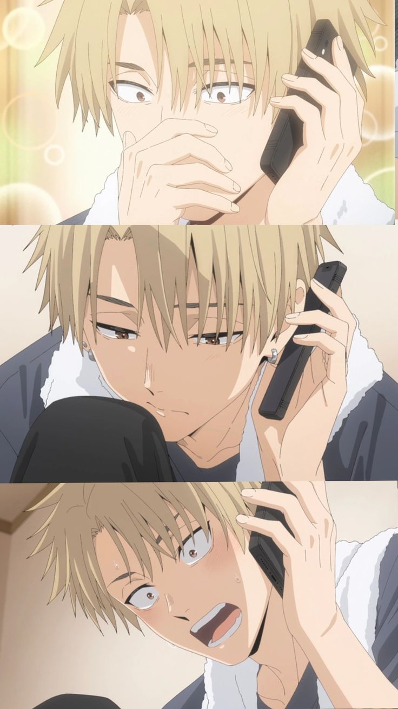
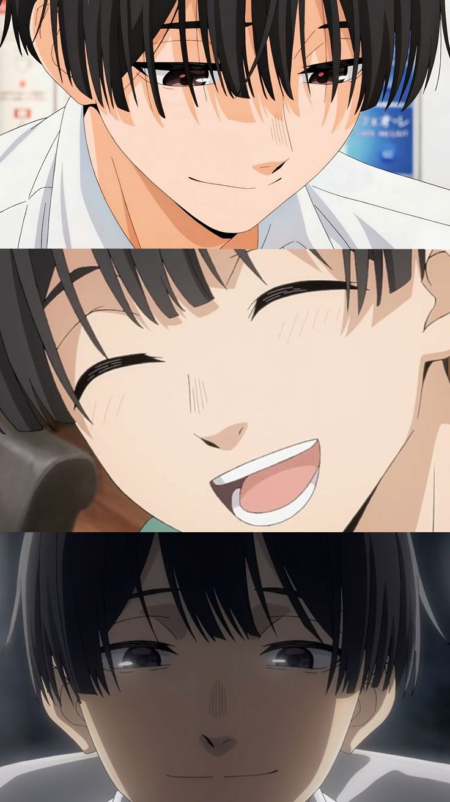
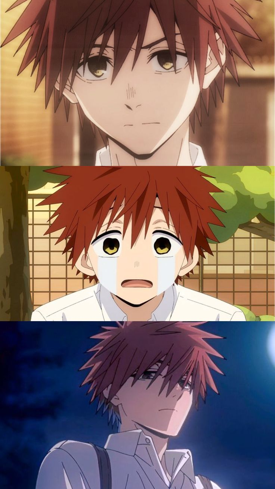
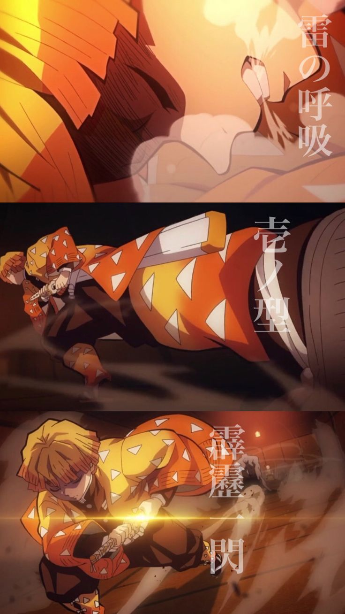
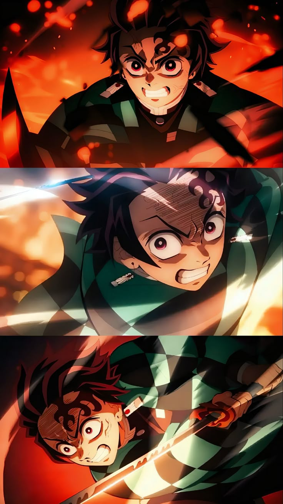
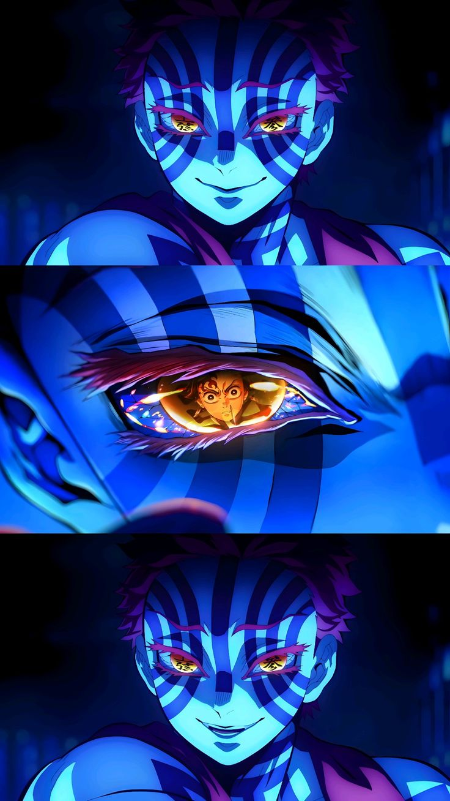
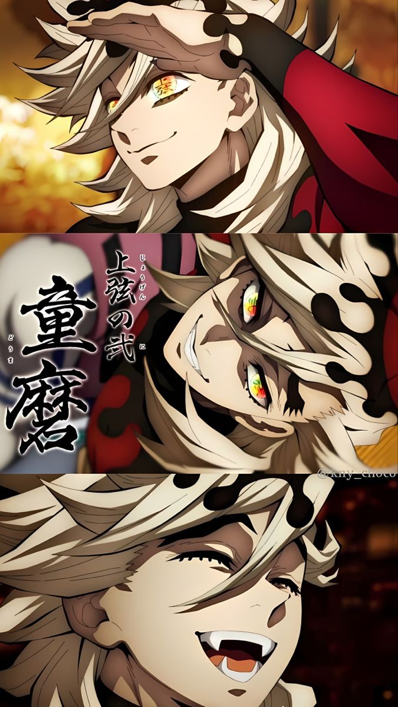

Dazai Osamu 太宰治
千鳥高中的二年級學生。體型高大，外表兇惡，經常被誤解為不良少年，實際上性格溫柔。家裡經營著一家蛋糕店，偶爾會去幫忙。

Edogawa Ranpo 江戶川亂步
凜太郎的同班同學和朋友。平時看似高冷，實則非常重視朋友。成績優異，每逢考試前都會給凜太郎他們輔導功課。

Nakahara Chuuya 中原中也
凜太郎的同班同學和朋友。性格善良，洞察力和觀察力敏銳，常幫翔平他們打圓場。是個「和平主義者」，不能容忍朋友受到傷害。看似溫和實則最不能招惹的存在…！？

Tanizaki jyunichirou 谷崎潤一郎
凜太郎的同班同學和朋友。雖然成績不好，但總能用開朗的性格活躍氣氛。不擅長隱藏心事，遇到在意的事或想到什麼就會脫口而出。

Agatsuma Zenitsu 我妻善逸
炭治郎的同期隊士，留著金色中短髮的圓眉少年，造型為制服上披著三角形圖案的黃色羽織。最初的髮色是黑色，據說有一次躲避桑島的訓練時躲在樹上卻被閃電劈中，從此變成金髮。為人十分膽小懦弱，對自己極度沒有自信，常常說出自嘲的話，時時刻刻都認為自己馬上就要被殺，因為這樣經常糾纏女孩子要對方跟他結婚。雖然性格不討人喜歡但心地善良，會為朋友和女性挺身而出。生來就擁有極佳的「聽覺」，能夠聽見心聲以及分辨人與鬼的聲音。

Kamado Tanjiro 竇門炭治郎
一名心地善良與正義感的少年，有著一頭深紅頭髮與紅色眼睛，左額上有著被燒傷的大片傷痕，耳上掛著日輪花紙耳飾。具有敏銳的「嗅覺」，能透過味道感知他人的情緒，甚至能在與鬼的戰鬥中聞出破綻的氣味。遺傳母親那有如石頭般堅硬的額頭，能讓被撞擊的人失去知覺。學習能力和領悟力極強，但教導別人的方式卻非常爛。尋找將被變成鬼的妹妹禰豆子恢復成人類的方法並為遇害的家人報仇，因此加入「鬼殺隊」。

Akaza 猗窩座
上弦之參，外型為擁有粉色短髮與長睫毛，精壯的身上有著許多深藍色圓圈刺青的少年鬼。喜愛強者，對弱小的人事物不屑一顧。和童磨相反，除了不太吃人外，也不會殺害或食用女性，沒有無慘命令時就依靠專心鍛鍊變強，和無憂無慮與自己搭話的童磨處不來，覺得對方很煩人。喜歡和人類交談，戰鬥時會和對方閒聊、摸清底細再下殺手。武術極強，非常擅長肉搏戰，再生能力驚人。血鬼術「術式展開 破壞殺 羅針」像雪晶一樣，能感應對手的「鬥氣」攻防一體。

Douma 童磨
上弦之貳，白橡色般的長髮上有著潑血狀的花紋，瞳色為彩色，外貌俊美，臉上總是掛著無憂無慮笑容的鬼。認為女性能孕育子嗣的身體較為營養而喜吃女性。血鬼術是將自己的血液結成霧狀的「冰」，配合作為武器的兩柄金屬摺扇釋出粉狀凍風，讓吸入者的肺泡瞬間壞死使獵鬼人無法使用呼吸法。外表溫和開朗，實則性格極度虛無、無法共情，不受同僚待見，卻自認為與大家感情深厚，單方面的把猗窩座當成最好的朋友。